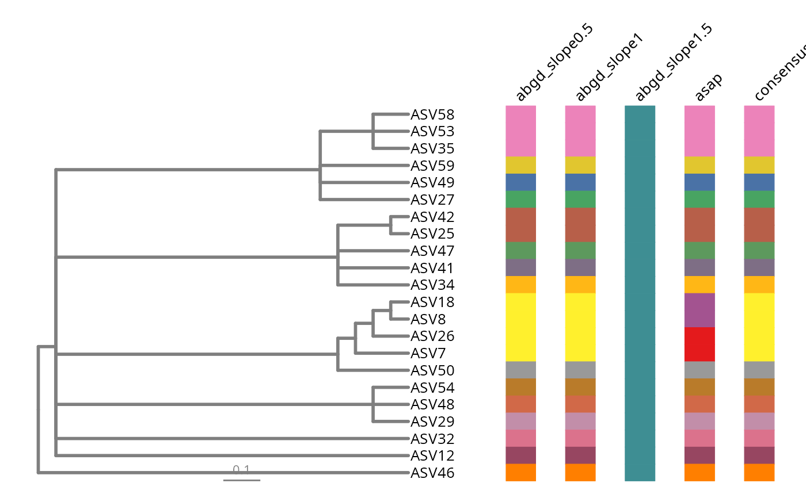

Compare several species delimitations of a phyloseq object
Source:R/delim_multi_pq.R
delim_multi_pq.Rd
Run ABGD and ASAP several times on the reference sequences of a
phyloseq-class object, join the resulting partitions
into a single table with delimtools::delim_join(), and display them side
by side along a phylogenetic tree with delimtools::delim_autoplot().
Where delim_pq() answers "which species does this taxon belong to?",
delim_multi_pq() answers "how stable is that answer?". A single barcode-gap
run is very sensitive to its parameters, so the usual practice is to scan a
range of relative gap widths and to compare the methods with each other
before trusting any one partition.
slopes drives the ABGD runs — one run per value, since the relative gap
width is the parameter ABGD is most sensitive to. ASAP has no equivalent
parameter (it scores and ranks partitions itself), so it contributes a
single run whatever slopes contains.
Usage
delim_multi_pq(
physeq,
methods = c("abgd", "asap"),
slopes = c(0.5, 1, 1.5),
model = 3,
exe = NULL,
tree = NULL,
build_tree = FALSE,
plot = TRUE,
consensus = TRUE,
n_match = NULL,
delim_order = NULL,
tbl_labs = NULL,
col_vec = NULL,
widths = c(0.5, 0.3),
label_angle = 45,
align = TRUE,
align_method = c("decipher", "mafft"),
mafft_exec = NULL,
outfolder = NULL,
keep_temporary_files = FALSE,
verbose = FALSE,
...
)Arguments
- physeq
(required) A
phyloseq-classobject with a non-emptyrefseqslot.- methods
Character vector of delimitation programs to run, any of
"abgd"and"asap". Default to both.- slopes
Numeric vector of relative gap widths, one ABGD run per value. Default to
c(0.5, 1, 1.5). Ignored when"abgd"is not inmethods.- model
Integer, the evolutionary model used by the external programs. 0: Kimura-2P, 1: Jukes-Cantor, 2: Tamura-Nei, 3: simple p-distance (default).
- exe
Named character vector of paths to the executables, e.g.
c(abgd = "/usr/local/bin/abgd"). Default to NULL, in which case each program is looked up withis_delim_installed().- tree
The tree used to order and display the partitions. Either a
phyloobject (apepackage), atreedataobject (tidytreepackage) or NULL (default). When NULL thephy_treeslot ofphyseqis used, and failing that a tree is built withMiscMetabar::build_phytree_pq()ifbuild_tree = TRUE.- build_tree
Logical, if TRUE and no tree is available a maximum likelihood tree is built from the alignment with
MiscMetabar::build_phytree_pq(). Default to FALSE, because building a tree is by far the slowest step of this function.- plot
Logical, if TRUE (default) a
delimtools::delim_autoplot()figure is returned in theplotelement. Requires a tree.- consensus
Logical, if TRUE (default) a consensus column computed by
delimtools::delim_consensus()is added to the figure. Silently turned off when fewer than two delimitations succeeded.- n_match
Integer, the number of delimitations that must agree for the consensus to call a species. Default to NULL, i.e. a simple majority (at least two).
- delim_order
Character vector giving the order of the columns in the figure. Default to NULL, i.e. the order the runs were performed in.
- tbl_labs
A two-column data.frame mapping tip labels (
label) to the labels shown on the figure (labs). Default to NULL, i.e. the tip labels themselves.- col_vec
Character vector of colours passed to
delimtools::delim_autoplot(). Default to NULL, i.e. a palette built withdelimtools::delim_brewer().- widths
Relative widths of the tree panel and of the partition panel, passed to
delimtools::delim_autoplot(). Default toc(0.5, 0.3), a little wider than thedelimtoolsdefault so that several runs fit.- label_angle
Angle of the run names above the partition panel. Default to 45 degrees, because run names such as
abgd_slope0.5overlap when written horizontally. Set to 0 for thedelimtoolslook.- align
Logical, if TRUE (default) reference sequences of unequal length are aligned with
align_pq()before being submitted. The alignment is computed once and reused by every run.- align_method
Aligner used when
align = TRUE, either"decipher"(default, pure R) or"mafft"(external program, much faster on largerefseqslots). Seealign_pq().- mafft_exec
Path to the MAFFT executable. Only used when
align_method = "mafft". Default to NULL, i.e. the usual lookup ofis_mafft_installed().- outfolder
Path to the folder the external programs write into. Each run gets its own sub-folder, so that a run producing nothing cannot inherit another run's partitions. Default to NULL, i.e. a temporary location.
- keep_temporary_files
Logical, if TRUE the FASTA file and the output folders are kept. Default to FALSE.
- verbose
Logical, if TRUE report each run and print the
delimtools::report_delim()summary. Default to FALSE.- ...
Additional arguments passed on to
MiscMetabar::build_phytree_pq()whenbuild_tree = TRUE.
Value
A list with five elements:
- delim
A named list of the partition tables, one per run.
- joined
A tibble with a
labelscolumn and one column per run, whose partition names are harmonised across runs bydelimtools::delim_join(), so that the same partition carries the same name everywhere.- summary
A data.frame giving the number of partitions each run found.
- plot
The
delimtools::delim_autoplot()figure, or NULL whenplot = FALSEor no tree was available.- tree
The
phyloobject used for the figure, or NULL.
Details
Run names are built from the method and its parameter, e.g.
abgd_slope0.5. Internally each run is submitted to
delimtools::delim_join() under a digit-free alias, because that function
strips every digit from the delimitation names before matching partitions
across runs, which would collapse abgd_slope0.5 and abgd_slope1.5 into
a single column. The user-facing names are restored afterwards.
ABGD and ASAP are not available on Windows, and both need an aligned
FASTA — hence the align = TRUE default.
References
Puillandre N., Lambert A., Brouillet S., Achaz G. (2012) ABGD, Automatic Barcode Gap Discovery for primary species delimitation. Molecular Ecology 21(8):1864-1877. doi:10.1111/j.1365-294X.2011.05239.x
Puillandre N., Brouillet S., Achaz G. (2021) ASAP: assemble species by automatic partitioning. Molecular Ecology Resources 21:609-620. doi:10.1111/1755-0998.13281
Examples
# \donttest{
library(MiscMetabar)
data(data_fungi_mini)
df <- subset_taxa_pq(data_fungi_mini, taxa_sums(data_fungi_mini) > 9000)
#> Cleaning suppress 0 taxa ( ) and 6 sample(s) ( AD26-005-H_S10_MERGED.fastq.gz / CB8-019-H_S70_MERGED.fastq.gz / DY5-004-H_S97_MERGED.fastq.gz / N23-002-B_S130_MERGED.fastq.gz / NVABM0244-M_S137_MERGED.fastq.gz / T28-ABM602-B_S162_MERGED.fastq.gz ).
#> Number of non-matching ASV 0
#> Number of matching ASV 45
#> Number of filtered-out ASV 23
#> Number of kept ASV 22
#> Number of kept samples 131
# Scan three ABGD gap widths, add one ASAP run, and order the result along
# a taxonomy-based tree
res <- delim_multi_pq(
df,
slopes = c(0.5, 1, 1.5),
tree = taxo2tree(df),
verbose = TRUE
)
#> ℹ Running abgd_slope0.5.
#> ℹ ABGD files are located in directory '/tmp/RtmpSIJqWk/phylopq_delim_multi_c350d1f5923e5/abgdA'.
#> ℹ Running abgd_slope1.
#> ℹ ABGD files are located in directory '/tmp/RtmpSIJqWk/phylopq_delim_multi_c350d1f5923e5/abgdB'.
#> ℹ Running abgd_slope1.5.
#> ℹ ABGD files are located in directory '/tmp/RtmpSIJqWk/phylopq_delim_multi_c350d1f5923e5/abgdC'.
#> ℹ Running asap.
#> /*
#> ASAP (Agglomerate Specimens by Automatic Processing)
#> will delineate species in your dataset in a few moments.
#> Remember that the final cut remains yours!
#> */
#> > asap is reading the fasta file and computing the distance matrix
#> done read
#> done mat
#> End of matrix distance
#> 22 input sequences
#> > asap is building and testing all partitions
#> > asap has finished building and testing all partitions
#>
#> > 10 Best asap scores (probabilities evaluated with seq length:399)
#> distance #species #spec w/rec p-value pente asap-score
#> * 0.0446 17 17 7.864e-01 1.477667e+00 2.500000
#> 0.1922 13 13 1.158e-01 8.351131e-01 3.500000
#> 0.1876 14 14 9.741e-01 8.351131e-01 5.000000
#> 0.2186 11 11 9.321e-01 2.698895e-01 6.500000
#> 0.2058 12 12 9.461e-01 4.724408e-01 6.500000
#> 0.2268 10 10 9.940e-01 1.820200e-01 8.500000
#> 0.1057 16 16 1.000e+00 2.631278e+00 8.500000
#> 0.1724 15 15 1.000e+00 1.829606e+00 8.500000
#> * 0.0216 18 18 1.000e+00 9.230866e-01 10.500000
#> 0.2370 9 9 9.980e-01 1.395227e-01 11.500000
#> > asap is creating text and graphical output
#> > results were write
#> partition results are logged in:
#> Full results: /tmp/RtmpSIJqWk/phylopq_delim_multi_c350d1f5923e5/asapD/delim_multi_pq..all
#> The rank below is given by asap_score
#> The csv file of rank x: /tmp/RtmpSIJqWk/phylopq_delim_multi_c350d1f5923e5/asapD/Partition_x
#> The result file of rank x: /tmp/RtmpSIJqWk/phylopq_delim_multi_c350d1f5923e5/asapD/Partition_x
#> The graphic outputs are: /tmp/RtmpSIJqWk/phylopq_delim_multi_c350d1f5923e5/asapD/*.svg
#> XML spart file is: /tmp/RtmpSIJqWk/phylopq_delim_multi_c350d1f5923e5/asapD/delim_multi_pq..spart.xml
#> Spart file is: /tmp/RtmpSIJqWk/phylopq_delim_multi_c350d1f5923e5/asapD/delim_multi_pq..spart
#> > asap computation times were:
#> 0m 0s to read file and compute distance
#> 0m 1s to compute and test all partitions
#> --------------
#> 0m 1s total
#> ℹ Joined delimitations have a total of 19 unique species partitions.
#> ℹ Check below the number of species partitions per method:
#>
#>
#> |method | partitions|
#> |:-------------|----------:|
#> |asap | 17|
#> |abgd_slope0.5 | 16|
#> |abgd_slope1 | 16|
#> |abgd_slope1.5 | 1|
#> Warning: Using `size` aesthetic for lines was deprecated in ggplot2 3.4.0.
#> ℹ Please use `linewidth` instead.
#> ℹ The deprecated feature was likely used in the ggtree package.
#> Please report the issue at <https://github.com/YuLab-SMU/ggtree/issues>.
res$summary
#> run n_partitions
#> 1 abgd_slope0.5 16
#> 2 abgd_slope1 16
#> 3 abgd_slope1.5 1
#> 4 asap 17
res$joined
#> # A tibble: 22 × 5
#> labels abgd_slope0.5 abgd_slope1 abgd_slope1.5 asap
#> <chr> <chr> <chr> <chr> <chr>
#> 1 ASV7 sp1 sp1 sp17 sp18
#> 2 ASV8 sp1 sp1 sp17 sp19
#> 3 ASV18 sp1 sp1 sp17 sp19
#> 4 ASV26 sp1 sp1 sp17 sp18
#> 5 ASV46 sp2 sp2 sp17 sp2
#> 6 ASV47 sp3 sp3 sp17 sp3
#> 7 ASV48 sp4 sp4 sp17 sp4
#> 8 ASV49 sp5 sp5 sp17 sp5
#> 9 ASV50 sp6 sp6 sp17 sp6
#> 10 ASV54 sp7 sp7 sp17 sp7
#> # ℹ 12 more rows
res$plot

# }
if (FALSE) { # \dontrun{
# Without a tree, only the tables are returned
res <- delim_multi_pq(df, plot = FALSE)
# Build a maximum likelihood tree on the fly (slow) and align with MAFFT
res <- delim_multi_pq(
df,
build_tree = TRUE,
nb_bootstrap = 5,
align_method = "mafft"
)
# ABGD only, on a finer grid of gap widths
res <- delim_multi_pq(df, methods = "abgd", slopes = seq(0.4, 1.6, by = 0.2))
} # }